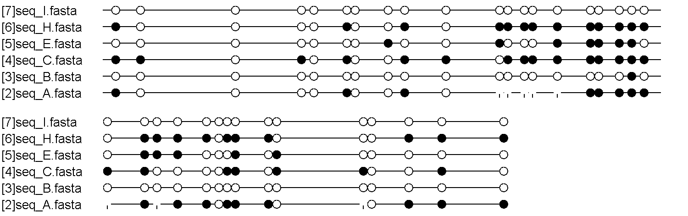
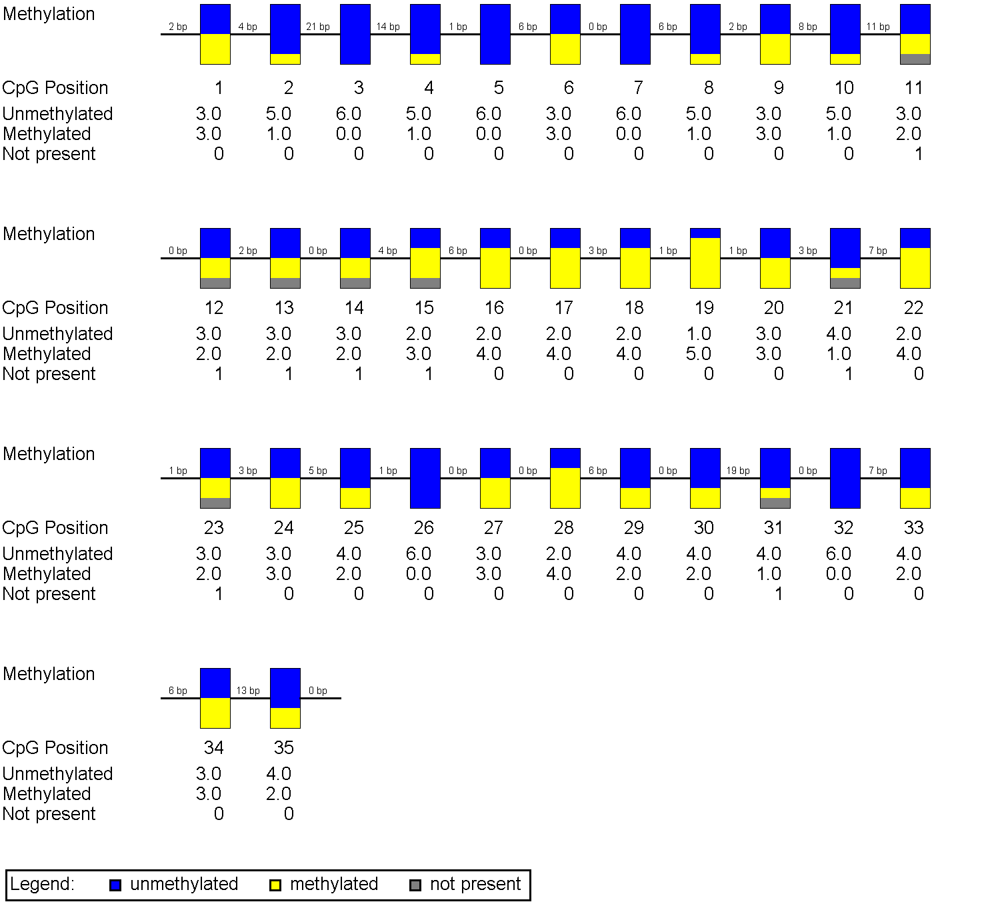

Experiment Documentation Questionnaire
[BiQ Analyzer Documentation (automatically generated)]
Date of quality check: 28 August 2008
Conversion type: C -> T
Genomic Sequence (original): CCCGGGATCGCTCTCCCAGCAGGTGAAGCCTCGCCATGGACCCTCCCCGTCGGGGCCCCGCGCTGCCCCGCCCGCCCCCAGCCGCTGGCCAAGGCCGCGGTCGCGCAGGCGCAGTGCCGCGTCCCGCCGCCGCCCCGCCCTGCCCGTCGCTGCGGAAGGCGCCGCGCGCAGCAACGCGCACTTCCTCTCCAGGAATCCGCGGAGGGAGCGCAGGCTCGAAGAGCTCCTGGACG
Genomic Sequence (fully converted): TTCGGGATCGTTTTTTTAGTAGGTGAAGTTTCGTTATGGATTTTTTTCGTCGGGGTTTCGCGTTGTTTCGTTCGTTTTTAGTCGTTGGTTAAGGTCGCGGTCGCGTAGGCGTAGTGTCGCGTTTCGTCGTCGTTTCGTTTTGTTCGTCGTTGCGGAAGGCGTCGCGCGTAGTAACGCGTATTTTTTTTTTAGGAATTCGCGGAGGGAGCGTAGGTTCGAAGAGTTTTTGGACG
[BiQ Analyzer Quality Data (automatically generated)]
Number of sequences excluded during the analysis:4
Names of sequences excluded during the analysis:
seq_D.fasta - excluded in step 3 (removal of sequences with low conversion rate or abundant sequencing errors)
seq_F.fasta - excluded in step 3 (removal of sequences with low conversion rate or abundant sequencing errors)
seq_G.fasta - excluded in step 4 (removal of clonal sequences)
seq_J.fasta - excluded in step 3 (removal of sequences with low conversion rate or abundant sequencing errors)
List of sequence identities relative to the genomic sequence in the final pileup (gaps ignored):
Sequence [2]: 91%
Sequence [3]: 99%
Sequence [4]: 100%
Sequence [5]: 100%
Sequence [6]: 99%
Sequence [7]: 100%
List of the sequences' conversion rates in the final pileup:
Sequence [2]: 100% (66 out of 66)
Sequence [3]: 96% (66 out of 69)
Sequence [4]: 99% (68 out of 69)
Sequence [5]: 96% (66 out of 69)
Sequence [6]: 100% (68 out of 68)
Sequence [7]: 100% (69 out of 69)
Sequence Pileup
Needleman-Wunsch pairwise alignment
Genomic_Sequence TTCGGGATCGT-TTTTTTAGTAGGTGAAGTTTCGTTATGGATTTTTTTCGTCGGGGTTTC
[2]seq_A.fasta TTCGGGATTGT-TTTTTTAGTAGGTGAAGTTTTGTTATGGATTTTTTTTGTTGGGGTTTC
[3]seq_B.fasta TTTGGGATTGT-TTTTTTAGTAGGTGAAGTTTTGTTATGGATTTTTTTTGTTGGGGTTTT
[4]seq_C.fasta TTCGGGATCGT-TTTTTTAGTAGGTGAAGTTTTGTTATGGATTTTTTTCGTTGGGGTTTC
[5]seq_E.fasta TTTGGGATTGTTTTTTTTAGCAGGTGAAGTTTTGTTATGGATTTTTTTTGTTGGGGTTTT
[6]seq_H.fasta TTCGGGATTGT-TTTTTTAGTAGGTGAAGTTTTGTTATGGATTTTTTTTGTTGGGGTTTC
[7]seq_I.fasta TTTGGGATTGT-TTTTTTAGTAGGTGAAGTTTTGTTATGGATTTTTTTTGTTGGGGTTTT
Genomic_Sequence G-CGTTGTTTCGTTCGTTTTTAGTCGTTGG-TTAAGGTCGCGGTCGCGTAGGCGTAGTGT
[2]seq_A.fasta G-TGTTGTTTTGTTCGTTTTTTGTTGTTGG-TTAA----G-GAA-AAAAAAAAATAGTGT
[3]seq_B.fasta G-TGTTGTTTTGTTTGTTTTTAGTTGTTGG-TTAAGGTTGTGGTTGTGTAGCTGTAGTGT
[4]seq_C.fasta G-TGTTGTTTTGTTCGTTTTTAGTCGTTGG-TTAAGGTTGCGGTCGCGTAGGCGTAGTGT
[5]seq_E.fasta GATGTTGTTTCGTTTGTTTCTAGTTGTTGGTTTAAGGTCGTGGTTGTGTAGGCGTAGTGT
[6]seq_H.fasta G-TGTTGTTTTGTTCGTTTTTTGTTGTTGG-TTAAGGTCGCGGTCGCGTAGGCGTAGTGT
[7]seq_I.fasta G-TGTTGTTTTGTTTGTTTTTAGTTGTTGG-TTAAGGTTGTGGTTGTGTAGGTGTAGTGT
Genomic_Sequence CGCGTTTCGTCGTCGTTTCGTTTTGTTCGTCGTTGCGGAAGGCGT-CGCGCGTAGTAACG
[2]seq_A.fasta CGCGTTTCGTCGTCGTTTAGTTTTGTTCGTGGTTGCGGAAGGCGGTTGCGCGTAGTAACG
[3]seq_B.fasta TGTGTTTTGTCGTTGTTTTGTTTTGTTTGTTGTTGTGGATGGTGT-TGTGTGTAGCAGTG
[4]seq_C.fasta CGCGTTCCGTCGTCGTTTCGTTTTGTTCGTTGTTGTGGAAGGTGT-TGCGCGTAGTAATG
[5]seq_E.fasta CGCGTTTCGTCGTTGTTTTGTTTTGTTCGTCGTTGCGGAAGGTGT-TGTGCGTAGCAATG
[6]seq_H.fasta CGCGTTTCGTCGTCGTTTTGTTTTGTTCGTCGTTGCGGAAGGCGGTTGCGCGTAGTAACG
[7]seq_I.fasta TGTGTTTTGTTGTTGTTTTGTTTTGTTTGTTGTTGTGGAAGGTGT-TGTGTGTAGTAATG
Genomic_Sequence CGTA-TTTTTTTTTTAGGAATTCGCGGAGGGAGCGTAGGTTCGAAGAGTTTTTGGACG
[2]seq_A.fasta TGTA-TTTTTTTTTTAGGAATTAGTGGAGGGAGCGTAGGTTCGAAGAGTTTTTGGACG
[3]seq_B.fasta TGTA-TTTTTTTTTCAGGAATTTGTGGAGGGAGTGTAGGTTTGAAGAGCTTTTGGATG
[4]seq_C.fasta CGTA-TTTTTTTTTTAGGAATTCGTGGAGGGAGTGTAGGTTCGAAGAGTTTTTGGATG
[5]seq_E.fasta CGTA-TTTTTTTTTTAGGAATTTGTGGAGGGAGTGTAGGTTTGAAGAGTTTTTGGATG
[6]seq_H.fasta TGTA-TTTTTTTTTTAGGAATTTGTGGAGGGAGCGTAGGTTCGAAGAGTTTTTGGACG
[7]seq_I.fasta TGTATTTTTTTTTTTAGGAATTTGTGGAGGGAGTGTAGGTTTGAAGAGTTTTTGGATG
Derived Methylation Data
Genomic Sequence with numbered CpG dinucleotides:
1 1 1 1 1 1 1 1 1 1 2 2 2 2 2 2 2 2 2 2 3 3 3 3 3 3
1 2 3 4 5 6 7 8 9 0 1 2 3 4 5 6 7 8 9 0 1 2 3 4 5 6 7 8 9 0 1 2 3 4 5
CCCGGGATCGCTCTCCCAGCAGGTGAAGCCTCGCCATGGACCCTCCCCGTCGGGGCCCCGCGCTGCCCCGCCCGCCCCCAGCCGCTGGCCAAGGCCGCGGTCGCGCAGGCGCAGTGCCGCGTCCCGCCGCCGCCCCGCCCTGCCCGTCGCTGCGGAAGGCGCCGCGCGCAGCAACGCGCACTTCCTCTCCAGGAATCCGCGGAGGGAGCGCAGGCTCGAAGAGCTCCTGGACG
Methylation data for these CpG dinucleotides (1=methylated, 0=unmethylated, x=unknown):
Sequence_Identifier CpG_1 CpG_2 CpG_3 CpG_4 CpG_5 CpG_6 CpG_7 CpG_8 CpG_9 CpG_10 CpG_11 CpG_12 CpG_13 CpG_14 CpG_15 CpG_16 CpG_17 CpG_18 CpG_19 CpG_20 CpG_21 CpG_22 CpG_23 CpG_24 CpG_25 CpG_26 CpG_27 CpG_28 CpG_29 CpG_30 CpG_31 CpG_32 CpG_33 CpG_34 CpG_35
[2]seq_A.fasta 1 0 0 0 0 1 0 0 1 0 x x x x x 1 1 1 1 1 x 1 x 1 1 0 1 1 1 0 x 0 1 1 1
[3]seq_B.fasta 0 0 0 0 0 0 0 0 0 0 0 0 0 0 0 0 0 0 1 0 0 0 0 0 0 0 0 0 0 0 0 0 0 0 0
[4]seq_C.fasta 1 1 0 1 0 1 0 0 1 1 0 1 1 1 1 1 1 1 1 1 1 1 0 0 0 0 1 1 0 1 1 0 0 1 0
[5]seq_E.fasta 0 0 0 0 0 0 0 1 0 0 1 0 0 0 1 1 1 1 1 0 0 1 1 1 0 0 0 1 0 1 0 0 0 0 0
[6]seq_H.fasta 1 0 0 0 0 1 0 0 1 0 1 1 1 1 1 1 1 1 1 1 0 1 1 1 1 0 1 1 1 0 0 0 1 1 1
[7]seq_I.fasta 0 0 0 0 0 0 0 0 0 0 0 0 0 0 0 0 0 0 0 0 0 0 0 0 0 0 0 0 0 0 0 0 0 0 0
Explanation: each '1' corresponds to a methylated C, a '0' corresponds to an unmethylated C, and an 'x' corresponds to a non-CpG position.
Methylation Statistics
DNA methylation summary over all sequences
Unmethylated CpGs: 0.605 (127 cases)
Methylated CpGs: 0.357 (75 cases)
CpGs not present: 0.038 (8 cases)
CpG position statistics per column (missing values e.g. due to sequencing errors are excluded from this analysis)
Position CpG_1 CpG_2 CpG_3 CpG_4 CpG_5 CpG_6 CpG_7 CpG_8 CpG_9 CpG_10 CpG_11 CpG_12 CpG_13 CpG_14 CpG_15 CpG_16 CpG_17 CpG_18 CpG_19 CpG_20 CpG_21 CpG_22 CpG_23 CpG_24 CpG_25 CpG_26 CpG_27 CpG_28 CpG_29 CpG_30 CpG_31 CpG_32 CpG_33 CpG_34 CpG_35
Average 0.500 0.167 0.000 0.167 0.000 0.500 0.000 0.167 0.500 0.167 0.400 0.400 0.400 0.400 0.600 0.667 0.667 0.667 0.833 0.500 0.200 0.667 0.400 0.500 0.333 0.000 0.500 0.667 0.333 0.333 0.200 0.000 0.333 0.500 0.333
Std. Dev. 0.548 0.408 0.000 0.408 0.000 0.548 0.000 0.408 0.548 0.408 0.548 0.548 0.548 0.548 0.548 0.516 0.516 0.516 0.408 0.548 0.447 0.516 0.548 0.548 0.516 0.000 0.548 0.516 0.516 0.516 0.447 0.000 0.516 0.548 0.516
Sequence clone statistics per row (missing values e.g. due to sequencing errors are excluded from this analysis)
Sequence_Identifier Average Std. Dev.
[2]seq_A.fasta 0.630 0.242
[3]seq_B.fasta 0.029 0.029
[4]seq_C.fasta 0.629 0.240
[5]seq_E.fasta 0.343 0.232
[6]seq_H.fasta 0.657 0.232
[7]seq_I.fasta 0.000 0.000
Lollipop-style Representation of Methylation Data

Save SVG version (vector graphics) or Save PNG version
Explanation: Filled (black) circles correspond to methylated Cs, unfilled (white) circles correspond to unmethylated Cs, and small vertical lines without a circle correspond to missing values (e.g. caused by sequencing errors).
This image is scaled to the size of the web browser window. To zoom in please increase the window size or open the picture into an image viewer. The image resolution and other diagram parameters can be changed in BiQ Analyzer's configuration editor. Alternatively, you can copy the machine-readable results from below and paste them into the web-based diagram calculator to generate custom diagrams online.
Aggregated Representation of Methylation Data

Save SVG version (vector graphics) or Save PNG version
Explanation: Each box corresponds to one CpG position in the genomic sequence. The colored bars summarize the methylation states of all sequences at that position.
This image is scaled to the size of the web browser window. To zoom in please increase the window size or open the picture into an image viewer. The image resolution and other diagram parameters can be changed in BiQ Analyzer's configuration editor. Alternatively, you can copy the machine-readable results from below and paste them into the web-based diagram calculator to generate custom diagrams online.
Results in Machine-readable Format
>Genomic sequence: CCCGGGATCGCTCTCCCAGCAGGTGAAGCCTCGCCATGGACCCTCCCCGTCGGGGCCCCGCGCTGCCCCGCCCGCCCCCAGCCGCTGGCCAAGGCCGCGGTCGCGCAGGCGCAGTGCCGCGTCCCGCCGCCGCCCCGCCCTGCCCGTCGCTGCGGAAGGCGCCGCGCGCAGCAACGCGCACTTCCTCTCCAGGAATCCGCGGAGGGAGCGCAGGCTCGAAGAGCTCCTGGACG
[2]seq_A.fasta 2 1 4 0 21 0 14 0 1 0 6 1 0 0 6 0 2 1 8 0 11 2 0 2 2 2 0 2 4 2 6 1 0 1 3 1 1 1 1 1 3 2 7 1 1 2 3 1 5 1 1 0 0 1 0 1 6 1 0 0 19 2 0 0 7 1 6 1 13 1 0
[3]seq_B.fasta 2 0 4 0 21 0 14 0 1 0 6 0 0 0 6 0 2 0 8 0 11 0 0 0 2 0 0 0 4 0 6 0 0 0 3 0 1 1 1 0 3 0 7 0 1 0 3 0 5 0 1 0 0 0 0 0 6 0 0 0 19 0 0 0 7 0 6 0 13 0 0
[4]seq_C.fasta 2 1 4 1 21 0 14 1 1 0 6 1 0 0 6 0 2 1 8 1 11 0 0 1 2 1 0 1 4 1 6 1 0 1 3 1 1 1 1 1 3 1 7 1 1 0 3 0 5 0 1 0 0 1 0 1 6 0 0 1 19 1 0 0 7 0 6 1 13 0 0
[5]seq_E.fasta 2 0 4 0 21 0 14 0 1 0 6 0 0 0 6 1 2 0 8 0 11 1 0 0 2 0 0 0 4 1 6 1 0 1 3 1 1 1 1 0 3 0 7 1 1 1 3 1 5 0 1 0 0 0 0 1 6 0 0 1 19 0 0 0 7 0 6 0 13 0 0
[6]seq_H.fasta 2 1 4 0 21 0 14 0 1 0 6 1 0 0 6 0 2 1 8 0 11 1 0 1 2 1 0 1 4 1 6 1 0 1 3 1 1 1 1 1 3 0 7 1 1 1 3 1 5 1 1 0 0 1 0 1 6 1 0 0 19 0 0 0 7 1 6 1 13 1 0
[7]seq_I.fasta 2 0 4 0 21 0 14 0 1 0 6 0 0 0 6 0 2 0 8 0 11 0 0 0 2 0 0 0 4 0 6 0 0 0 3 0 1 0 1 0 3 0 7 0 1 0 3 0 5 0 1 0 0 0 0 0 6 0 0 0 19 0 0 0 7 0 6 0 13 0 0
Explanation: This section contains essentially the same information as the lollipop diagrams, but in a format that can be readily processed by computer programs. For example, if you need the lollipop diagram at a higher resolution or with different line breaks, then you can go to the BiQ Analyzer Diagrams website, paste the information above, and generate a new diagram without having to run through the entire quality control procedure again. The format is as follows: the first line specifies the genomic sequence and each of the following lines represents DNA methylation information for one clone (the first tab-separated value is the sequence name, the next is the distance in base pairs until the first CpG, next comes the methylation state of the first CpG, then the distance to the next CpG, and so on).
Generated with BiQ Analyzer v2.0 - (c) Christoph Bock 2008